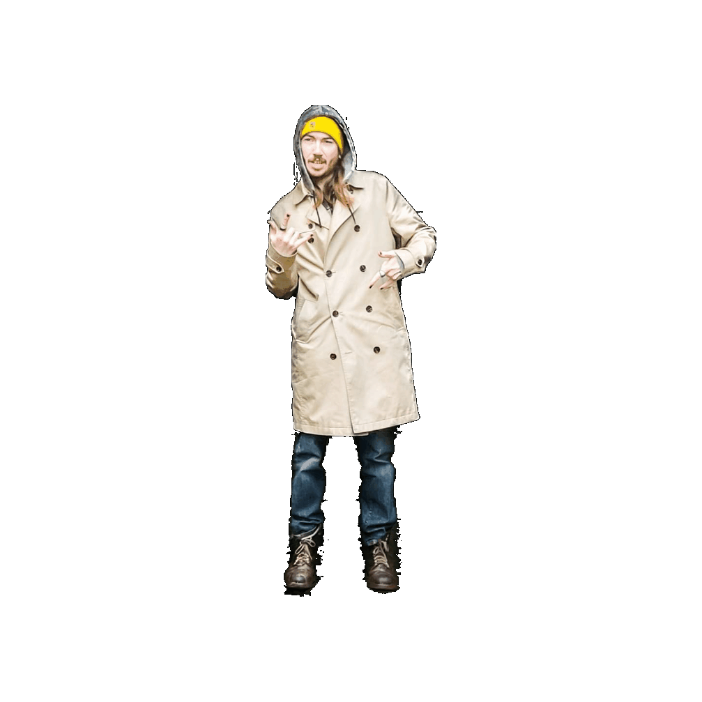

DCN Terminal v3.0
🔊 Streaming from the DCN Radio Server: Loading...
Hidden broadcasts, terminal fragments, and mystery signals will appear here...
Game

05.06.2025: The dark side of the force is strong with this one...
04.15.2025: It's festival season! Electronic Music TAKEOVER!.
02.15.2025: I got another musical toy..
[More]